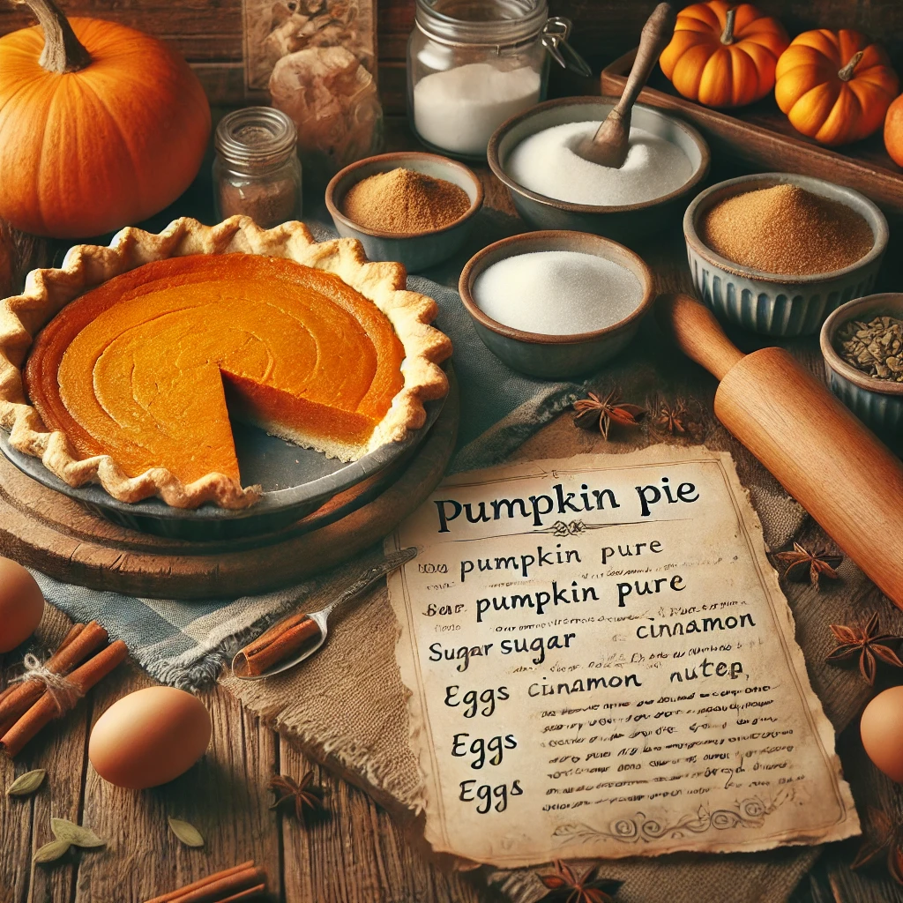

Homemade Fresh Pumpkin Pie

This homemade pumpkin pie made with mashed, cooked pumpkin is my family's favorite. Skip the canned pumpkin and
store-bought crust and make your holiday pumpkin pie from scratch with a flaky homemade pastry crust and a
deliciously spiced pumpkin filling. Hope you enjoy it as much as my family does!
Submitted by Randy Scott
Prep Time:
20 mins
Cook Time:
40 mins
Total Time:
1 hr
Servings:
8
Yield:
1 (9-inch) pie
Ingredients
Pastry Crust:
- 1 ⅓ cups all-purpose flour
- ½ teaspoon salt
- ½ cup cold butter or shortening
- 3 tablespoons cold water, or more as needed
Filling:
- 2 cups mashed, cooked pie pumpkin
- 1 (12 fluid ounce) can evaporated milk
- 2 large eggs, beaten
- ¾ cup packed brown sugar
- ½ teaspoon ground cinnamon, or more to taste
- ½ teaspoon ground ginger, or more to taste
- ½ teaspoon ground nutmeg, or more to taste
- ½ teaspoon salt
Directions
- Preheat the oven to 400 degrees F (200 degrees C).
- To make the pastry crust: Mix flour and salt together in a bowl. Cut in butter with a pastry blender
until mixture resembles coarse crumbs. Mix in 3 tablespoons water, one at a time, until dough is
moist enough to hold together. Add up to 1 more tablespoon water if needed.
- Shape dough into a ball with lightly floured hands. Roll dough on a lightly floured surface to a
thickness of 1/8 inch. Place a 9-inch pie pan upside-down on the dough; use a sharp knife to cut
a circle of dough 1 ½ inches larger than the pie pan. Remove and discard dough scraps and set
pie pan aside.
- Gently roll circular piece of dough around the rolling pin; transfer it right-side up over the pie pan.
Unroll, easing dough into the bottom of the pan. Use two hands to flute the dough around the top
edges.
- To make the filling: Beat pumpkin, evaporated milk, brown sugar, eggs, cinnamon, ginger,
nutmeg, and salt in a large bowl with an electric mixer until well combined. Pour into the prepared
crust.
- Bake in the preheated oven until a knife inserted into the filling 1 inch from the edge comes out
clean, 40 to 60 minutes. Cover the edges with foil if needed to prevent from burning as the filling
cooks.
- Remove from the oven and cool to room temperature before serving.
To Prepare Mashed Pumpkin
Cut a fresh pie pumpkin in half. Scoop out and discard seeds and stringy portions. Leave skin on and cut
pumpkin into chunks. Measure out 1 ½ pounds for this recipe to yield 2 cups of mashed, cooked pumpkin.
If your pumpkin is larger, consider cooking 3 pounds and doubling the pie recipe above to make two pies.
Place pumpkin chunks in saucepan over medium heat with 1 inch water; bring to a boil. Reduce the heat
to low, cover, and simmer until tender, about 30 minutes. Drain and cool. Remove and discard peel.
Return pumpkin to the saucepan and mash with a potato masher or use a food mill until smooth.
Nutrition Facts
363 Calories
18g Fat
44g Carbs
7g Protein
To see more photos, click here